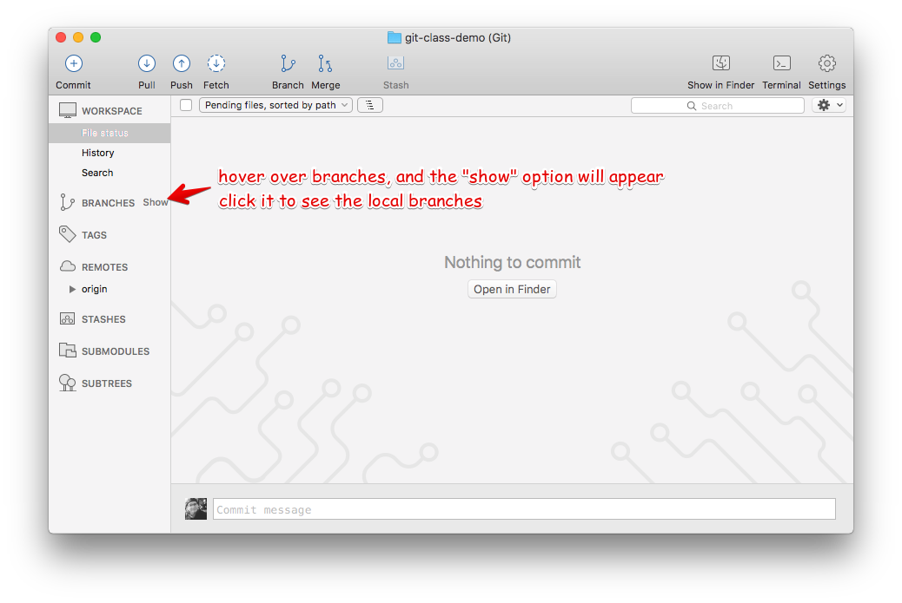
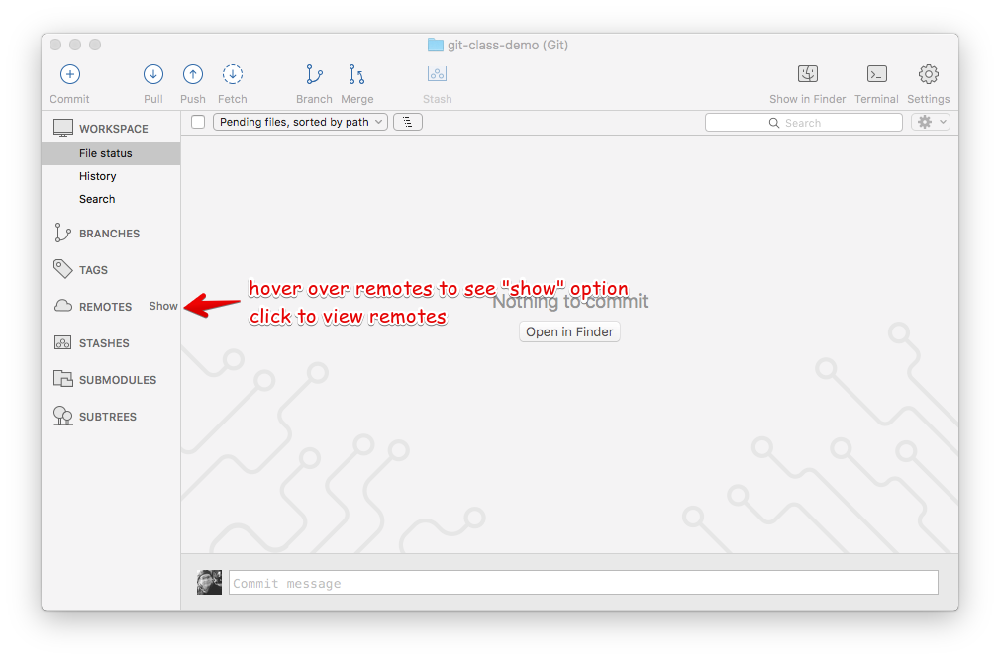
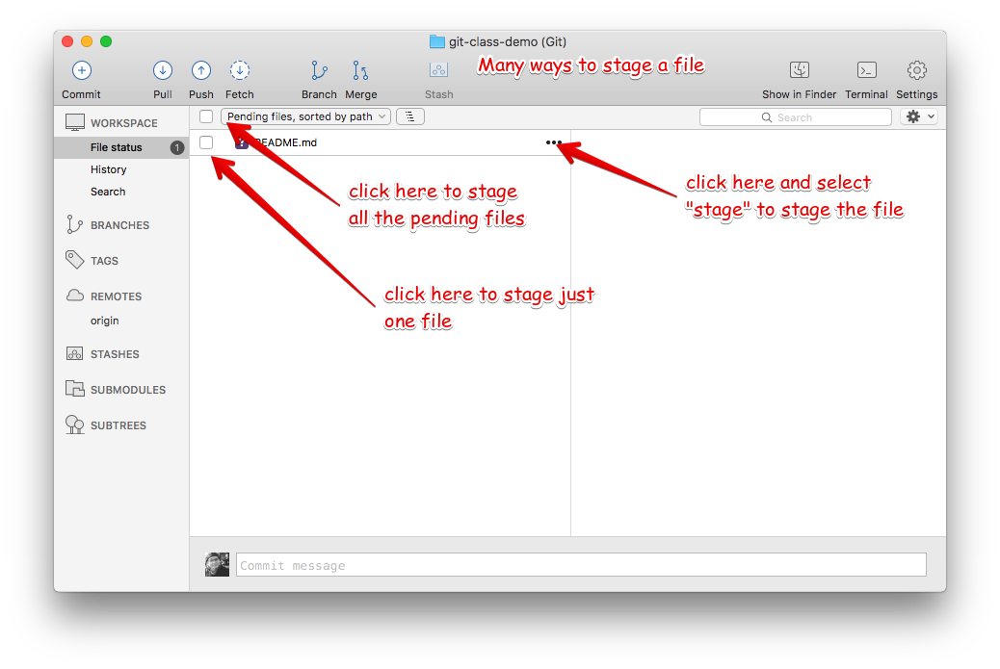
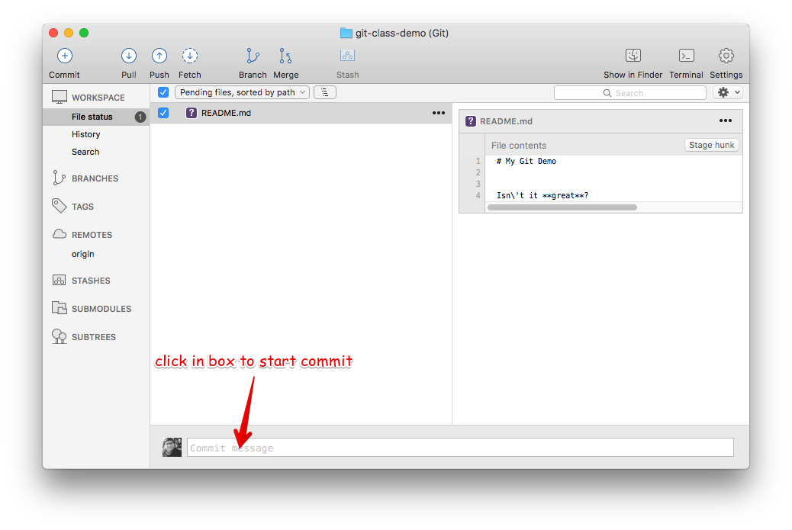
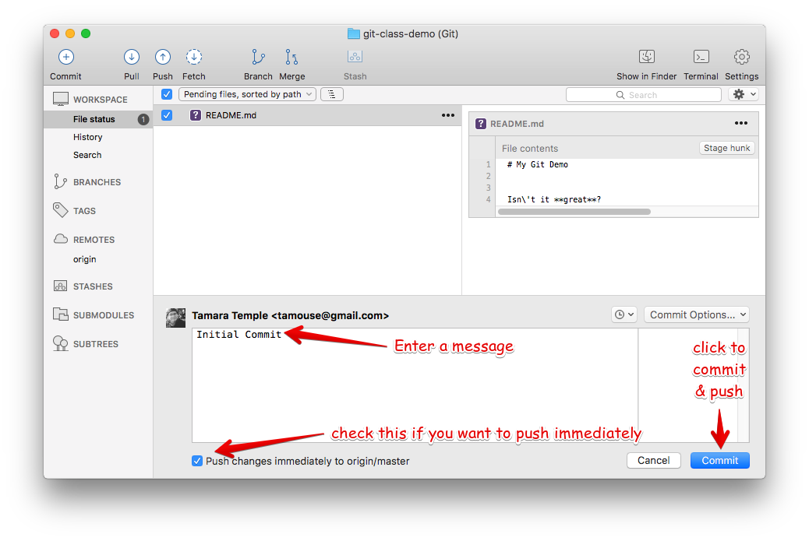
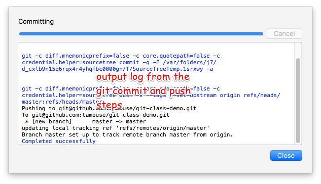

Installing and Configuring SourceTree
Installation
- Sign up with Atlassian
- Register your copy
- Skip step that connects to BitBucket or Github
Install Command Line Tools
From the SourceTree menu:

Set Preferences
From the SourceTree menu:

Make sure your user information is correct:

Set up the global gitignore file.

You can edit it from here as well.
Set push branches to "matching":

Connect to Github
Let's go ahead and connect up to your GitHub account.
Under the Account tab, click on "Add"

Then select "GitHub", "OAuth", and click on "Connect"

Log in to GitHub with your account

After logging in, click on "Generate"

Have SourceTree generate the key pair.
You can leave the Pass phrase fields empty.

Click on "OK" to enable the connection to GitHub

You are now connected to your GitHub account

Verify that the SourceTree key is on Github.
In the browser, go to your account, Settings -> SSH and GPG Keys
Look for the SourceTree key

Getting Familiar with SourceTree
Menubar
The menubar at the top has the major operations

Sidebar
Hover over the major items in the side bar to show or hide them
Same for remotes
Creating a New Project, Remote First
WIth SourceTree, it's super easy to start a new project by creating a remote repo on Github.
Create the Remote Repo
Start creating the remote repo

Select "Create Remote"

Create the remote repo

Clone the remote to your local machine
Click on remote to show your remote repos

Use the search box to filter the repos

Clone the repo

Set the location for the clone on your local machine

Click the "Clone" button

Look at your new repo!

but it's empty…
Create some new content
Open you new project in your editor
Add a README.md file
# This is My Git Class Demo
Isn't it **great**?
Save the file and go back to SourceTree
Stage the changes
You can see the new content reflected in SourceTree
Click in the box by the README file to stage it.
Commit and Push the content
Click in the commit text box to start the commit process.
Type in the commit message, leave the "Push" box checked, and click on "Commit"
The command log will show the execution and results, including any errors
Create a New Project, Local First
You can also create the local repository first with SourceTree
(… and create the remote at the same time!)
Choose location

Create the local repo

Tell it the location

Create the remote

See the new repo on Github

But it's still empty
So create some content!

Add, commit, and push

Output from commit message

See local branches
At first, SourceTree hides the local branches, so tell it to show them

See the remote branches, too

Finally, look over at Github

Tracking and Reverting Changes
Before staging
After staging, before committing
After committing, before pushing
After pushing
Multiple Development Paths
Work on multiple versions at the same time with:
- Branching
- Merging
Creating a new branch to work on a feature or bug,

and then merge it back into the regular development branch
Branching
To make a new branch from an existing branch, click the "Branch" button:

Give the branch a name
In the dialog, enter the new branch name:

Leave the "Working copy parent" and "Checkout new branch" options selected.
Create the new branch
Press then "Create Branch" button.

Your new branch
In SourceTree, the current working branch is highlighted.

Make some changes
After you make some changes, SourcTree reports uncommitted changes

See the pending changes

Stage the changes
Select the checkbox next to the changes you want to stage (or all)

Commit the changes
Click on "Commit" to start the commit proess

Review, comment, and commit
Review the changes, add a commit message, and commit.

Check the "Push" checkbox to also peform the push to the remote
Output from push

After the commit and push

Merging
- When you're finished working in the development branch, you'll want to merge those changes with the master branch.
- Since the master branch may have also been updated, you need to first pull changes to master and merge with your development branch.
- Resolve any conflicts that may arise.
- Finally, Merge your development branch with master.
Set up a conflict with master
Edit the README.md file

Commit the update, but don't push

Set up a conflict to resolve
Checkout master

Edit the README.md file in master
See the uncommitted changes

Commit and push changes in master

Check out the new branch again

CONFLICT SET UP!
The README.md file is changed in both the master and new
branches
- these changes cannot be resolved automatically
Now back to the regularly scheduled program
Updating new branch with changes from master
Merge master into the new branch

Confirm the merge

Merge result output

Merge conflict warning

Merge conflicts visible in repo status

Resolving Merge Conflicts
Prepare to resolve conflict

Launch merge tool

Merge choices

Fix changes in editor

Edit the file to resolve changes

Mark the file resolved

Complete the merge

Commit to complete the merge

Push all the commits

Push dialog

Merge the new branch into master
Over on GitHub…

Create a Pull Request

PR Dialog

PR View

PR Files Diff

Merge PR Button

Complete the merge

Success!

Updating the Local Master
Checkout local master

Pull changes from remote

Pull dialog

Pull output

Cleaning up
Delete the old "new" branch
The "new" branch is now fully merged, so it can be deleted

Delete branch dialog

Delete branch output

Status after delete

Rebasing
- Rebasing is a complicated topic, it takes some time to understand what's going on.
- It's like merging, except not exactly.
- Sadly, this is where SourceTree falls down.
- it's incorrect
- it's interface is confusing
- So we're not covering it today